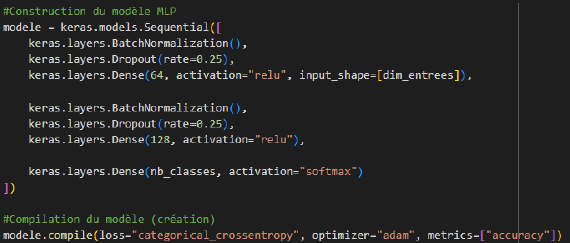
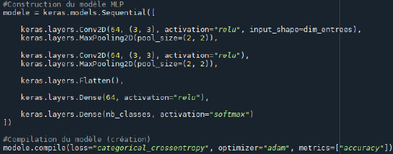
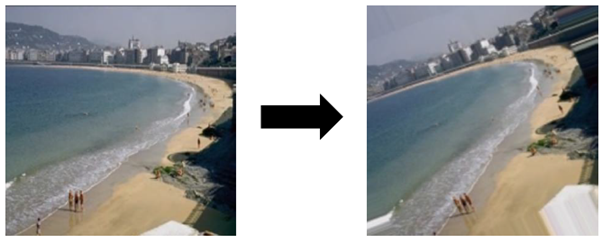

Introduction aux réseaux de neurones
Pour ce projet, nous devions mettre en place et optimiser deux modèles de réseaux de neurones. L’objectif était de pouvoir obtenir un modèle capable de discriminer 1000 images et les attribuer à 10 catégories différentes. Deux méthodes ont pu être testées : un basée descripteurs, et l’autre basée Deep.
Pour la première approche, les images étaient converties en informations numérique grâce à des indicateurs de récupération d’image, qui consistent à décomposer chaque aspect de l’image (couleurs, formes, nombre de droites, nombre de coins) en données numérique. Notre modèle était un perceptron multicouche, c’est-à-dire un réseau de neurone composé de plusieurs couches de neurones où chacune est connectée à la suivante. Les données ont alors été importées et séparée en un jeu d’apprentissage et de test en langage Python. Pour obtenir les meilleurs résultats possibles, plusieurs techniques ont été mises en place pour permettre au modèle de mieux généraliser les résultats et éviter le sur-apprentissage : normalisation des données, désactivation de certains neurones pendant l’apprentissage, et diminution du nombre de couches ou de neurones. Finalement, nous obtenions un taux de bien classés de 70% en moyenne au bout de 40 epochs. En testant d’autres indicateurs de récupération d’images, nous avons obtenu au maximum un score f1 de 84%, ce qui indique que le modèle discriminait bien les images.
La deuxième approche consistait à exploiter directement les images elles-mêmes à l’aide des couches de convolution. Il s’agit d’une série de filtres permettant de scanner les informations les plus importantes des images et résumer l’information. Ces dernières sont ensuite réduites à une dimension analysable pour des couches de neurones afin de classer les images, comme sur le modèle précédent. Il alors fallu préparer les images, en unifiant leur format en 200*200 pixels et en normalisant leurs couleurs. En travaillant pas à pas, nous avons fini par obtenir un taux maximum de bien classés à 76.5%, ce qui est bon mais reste plus faible que la première approche. C’est en gardant seulement une couche de convolution, suivie d’une couche de 16 neurones et d’une couche de sortie, que nous avons obtenu notre modèle final.
D’autres méthodes ont été testées afin d’améliorer les résultats, tels que l’augmentation de données, qui consiste générer des variantes des images dont nous disposons pour que le modèle ait plus de données sur lesquelles apprendre. Mais ceci n’a pas permis d’améliorer le score. Le Transfert Learning était une autre solution, mais n’a également pas suffit.
Le projet s’est fini sur la rédaction d’un rapport témoignant de la démarche suivie pour réaliser le travail.
Compétences acquises :
- Approfondissement des connaissances en Python et apprentissage de la librairie Pytorch
- Connaissances sur le fonctionnement et l’optimisation des réseaux de neurones
- Rédaction d’un rapport et synthétisation de résultats
- Mise en place d’indicateurs statistiques pour mesurer les performances d’un modèle
- Identification des limites d’un modèle
- Comparaison de différentes approches aux réseaux de neurones
Illustrations

Architecture du réseaux de neurones construit lors de l'approche basée descripteurs

Courbe d'évolution du taux de bien classés au fur et à mesure de l'entraînement du modèle

Architecture du réseaux de neurones construit lors de l'approche Deep

Exemple de génération de variantes d'images. Ici, la seconde image est générée à partir de la première et a été pivotée puis décalée, le vide provoqué par la rotation est ensuite comblé par de l'interpolation linéaire.